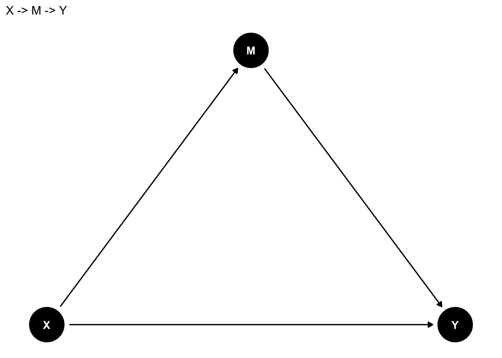

Chapter 8 回帰分析の活用
本章では、前章で学んだ回帰分析を発展させて、複数の独立変数を扱う方法について説明する。
内容に入る前に、右上のプロジェクトのボックスの横が、前章で作成したプロジェクトの名前（たとえば、seminar_sociology_r）になっているかどうかを確認しておこう。なっていない場合は、右上のボックスをクリックして、「Open Project…」を選択し、前章で作成したRprojファイル（たとえば、seminar_sociology_r.Rprojといったような名前になっている）を選んで、プロジェクトを切り替えよう。
さらに、これまでの章で説明した以下のパッケージを読み込んだ上で、第4章で作成したデータを読み込んでpiaacというデータフレームに入れていることを前提とする。具体的には、以下のコードを実行しておく必要がある。
library(tidyverse)
library(gtsummary)
library(flextable)
library(modelsummary)
piaac <- read_rds("data/piaac_sample_analytic.rds")8.1 重回帰分析
先の単回帰分析では、年齢、性別、学歴、数的思考力スコアによって賃金が異なっていることをみた。これら4つの変数を同時に考慮することで、賃金の分散をよりよく説明できるモデルを作ることができないだろうか？このようなときに役に立つのが、重回帰分析である。
今推定したい式は次のように書くことができる。
\[ y = \beta_0 + \beta_1年齢 + \beta_2女性 + \beta_3高校卒 + \beta_4短大高専卒 + \beta_5大学大学院卒 + \beta_6数的思考力スコア \]
\(\beta_1\)が年齢の係数、\(\beta_2\)が（男性と比較したときの）女性の係数、\(\beta_3, \beta_4, \beta_5\)が（中学卒と比較したときの）高校卒、短大高専卒、大学大学院卒の係数を、\(\beta_6\)が数的思考力スコアの係数を、それぞれ表す。各係数は、他の変数を一定として（統制 controlして、ともいう）、当該変数の値が1単位増えると\(y\)がどれだけ変化するのか、という独立の影響力を測っていることになる。
前章と同じように、lm()関数を使って推定することができる。ここでは、賃金の測定の際により一般的に使われる、対数変換した賃金（logwage）を用いる。正負の解釈については通常と同じだが、係数の値についての解釈は少しだけ勉強が必要になる。くわしくは前章「対数変換」を参照のこと。
##
## Call:
## lm(formula = logwage ~ age + gender + educ + numeracy, data = piaac)
##
## Residuals:
## Min 1Q Median 3Q Max
## -1.23602 -0.31230 -0.03953 0.29831 1.89012
##
## Coefficients:
## Estimate Std. Error t value Pr(>|t|)
## (Intercept) 5.7551032 0.0833818 69.021 < 2e-16 ***
## age 0.0085794 0.0008344 10.282 < 2e-16 ***
## gender男性 0.3915738 0.0184461 21.228 < 2e-16 ***
## educ高校 0.0784268 0.0347435 2.257 0.0241 *
## educ短大高専 0.1725538 0.0370332 4.659 3.32e-06 ***
## educ大学大学院 0.3395225 0.0380275 8.928 < 2e-16 ***
## numeracy 0.0027443 0.0002375 11.553 < 2e-16 ***
## ---
## Signif. codes: 0 '***' 0.001 '**' 0.01 '*' 0.05 '.' 0.1 ' ' 1
##
## Residual standard error: 0.4574 on 2721 degrees of freedom
## Multiple R-squared: 0.3123, Adjusted R-squared: 0.3108
## F-statistic: 205.9 on 6 and 2721 DF, p-value: < 2.2e-16それぞれ係数、標準誤差、p値のみかたはいずれも前回と同じである。
一般的に、重回帰分析の式は次のように書ける。
\[ y = \beta_0 + \beta_1x_1 + \beta_2x_2 + \cdots + \beta_kx_k \]
係数\(\beta_1\)は、他の変数\(x_2, \cdots, x_k\)を一定としたうえで、\(x_1\)の値が1単位増えると\(y\)がどれだけ変化するのかを示す。
重回帰分析の係数は最小二乗法によって推定される。
8.2 交絡要因の統制
8.2.1 交絡とは何か
では実際、重回帰分析はどのようなことを知りたいときに使うのだろうか。たとえば、数的思考力スコアが高くなるとどれくらい対数賃金が高くなるのかを知りたいと思ったとする。つまり、数的思考力スコアが原因であり、対数賃金は結果である、というように、両者の因果関係を明らかにしたい、という場合を考えよう。
原因を\(X\)、結果を\(Y\)とすると、両者の関係は次のように表すことができる。矢印の方向は効果の方向を表しており、原因→結果、であることを意味する。このように変数間の関係を点と矢印の関係で表した図のことをDAG（Directed Acyclic Graph）という。

原因が結果に与える効果を因果効果 causal effectとよぶ。具体的には、X以外の要因をすべて同じとして、Xの値のみが変わった場合に結果が変わるのであれば、Xには因果効果があると考える。
今回の場合、単回帰分析ではこのような因果効果を明らかにすることはできない。たとえば、女性はさまざまな理由から男性と比べて数的思考力スコアが低い傾向がある19。また、女性はさまざまな理由から労働市場で男性と比べて高い賃金を得られていない。だとすれば、数的思考力スコアが高いと賃金が高いというのはたんに見かけ上の関係に過ぎず、実際には数的思考力スコアは何ら賃金を高める効果を持っていないのかもしれない。性別に色分けした以下の散布図を見てみよう。たしかに、数的思考力も高く対数賃金も高い右上には男性が、数的思考力スコアが低く対数賃金も低い左下には女性が、それぞれ集中しているようにみえる。
piaac %>%
ggplot(aes(x = numeracy, y = logwage, color = gender)) +
geom_point(shape = 1) +
labs(color = "")
性別が同じであったとしてもなお（性別を一定としたうえで、などという）、数的思考力スコアと（対数）賃金の関係をみることができたなら、「数的思考力スコアが高くなるとどれくらい対数賃金が高くなるのか」という問いの答えに近づくことができる。重回帰分析は、こうしたモチベーションに答えるための最も基本的な方法である。
今の議論を図にすると、次のようなかたちになる。

Xを数的思考力スコア、Yを賃金、Zを性別と考えよう。知りたいのは数的思考力スコアが賃金に与える効果（X → Y）だが、その背後にはXにもYにも影響する要因Z（Z → X、Z → Y）が存在する。そのため、数的思考力スコアが賃金に与える効果をみたいのならば、Zを一定とする必要がある。このように、XとYの両者に影響する要因を交絡要因 confounderとよぶ。
複数の変数を使うときの回帰分析では、関心のある変数xと、統制したい変数zというふうに別々の役割があるということが多い。
8.2.2 結果の比較と解釈
もちろん、両者の背後にある交絡要因は性別だけではないだろう。年齢や学歴も関係しているかもしれない。たとえば学歴はどのように数的思考力スコアと賃金の両者と関係しているだろうか。学歴が高い人は学校での勉強を通じて数的思考力スコアを高めており、学歴が高い人は（本人の能力とは関係なしに）賃金の高い仕事に就けるために、見かけ上数的思考力スコアと賃金に正の関連があるだけかもしれない。
以下では、
- 単回帰分析
- 性別を統制した回帰分析
- 性別に加えてさらに年齢と学歴を統制した回帰分析
を比較しながら、それぞれ数的思考力スコアの係数がどのように変わるのかをみてみよう。
reg_res1 <- lm(data = piaac, logwage ~ numeracy)
reg_res2 <- lm(data = piaac, logwage ~ numeracy + gender)
reg_res3 <- lm(data = piaac, logwage ~ numeracy + gender + age + educ)
modelsummary(list(reg_res1, reg_res2, reg_res3),
stars = TRUE,
fmt = 4,
coef_map = c("numeracy" = "数的思考力スコア",
"age" = "年齢",
"gender男性" = "男性（vs. 女性）",
"educ高校" = "高校（vs. 中学）",
"educ短大高専" = "短大高専（vs. 中学）",
"educ大学大学院" = "大学大学院（vs. 中学）",
"(Intercept)" = "切片"),
gof_map = c("nobs", "r.squared"))| (1) | (2) | (3) | |
|---|---|---|---|
| + p < 0.1, * p < 0.05, ** p < 0.01, *** p < 0.001 | |||
| 数的思考力スコア | 0.0044*** | 0.0036*** | 0.0027*** |
| (0.0002) | (0.0002) | (0.0002) | |
| 年齢 | 0.0086*** | ||
| (0.0008) | |||
| 男性（vs. 女性） | 0.4146*** | 0.3916*** | |
| (0.0185) | (0.0184) | ||
| 高校（vs. 中学） | 0.0784* | ||
| (0.0347) | |||
| 短大高専（vs. 中学） | 0.1726*** | ||
| (0.0370) | |||
| 大学大学院（vs. 中学） | 0.3395*** | ||
| (0.0380) | |||
| 切片 | 6.0352*** | 6.0424*** | 5.7551*** |
| (0.0688) | (0.0633) | (0.0834) | |
| Num.Obs. | 2728 | 2728 | 2728 |
| R2 | 0.116 | 0.254 | 0.312 |
なお、この例のように、回帰分析の表を作るときには、カテゴリ変数の比較対象（参照カテゴリ）が何かを書くとわかりやすいだろう。
また、一般的に切片の値そのものにはあまり興味がないことが多いので、切片の係数は下の方に表示されることが多い。coef_map = c()の箇所に表記した順番に係数が表示されるので、ここの順番を調整すると、切片の係数を下の方に表示することができる。
(1)、(2)、(3)ではそれぞれ数的思考力スコアの係数が違っていることが確認できる。性別を統制した(2)、さらに年齢と学歴を統制した(3)では、それぞれ係数が小さくなっていることがわかる。
ここからわかることは2つである。第1に、数的思考力スコアと対数賃金との正の関連の一部は、両者の背後にある交絡要因（性別、年齢、学歴）によって生じているということである。第2に、しかしながらこれらの交絡要因を統制してもなお、数的思考力スコアの係数は正でありかつ統計的にも有意である。したがって、性別、年齢、学歴を一定としてもなお、数的思考力スコアが高いほど対数賃金が高いといえる。
もちろん、性別や年齢、学歴だけではなくほかにもさまざまな要因が絡んでくるから、通常、回帰分析だけで数的思考力が賃金に与える真の因果効果を明らかにしたのだということはできない。しかし、適切に要因を統制すれば、数的思考力が賃金に与える因果効果に近づいていくことはできる。
8.3 統制変数には何を含めるべきか
統制変数は多ければ多いほど望ましいのだろうか？必ずしもそうとは限らない。むしろ、無分別に統制変数を増やしていくと、かえって因果効果の推定がゆがめられてしまうこともある。では、どのような変数を統制変数として含めるべき、あるいは含めるべきではないのだろうか？ここでは、3つのパターンに分けて説明する。
8.3.2 Xの結果であり、Yの原因である変数（媒介要因）：場合による
Xの結果であり、Yの原因である変数のことを指して、媒介変数 Mediating variable; 媒介要因 Mediatorという。

たとえば、「学歴が高いとどの程度賃金が高くなるのか」を明らかにしたいと考えたとする。学歴が賃金を高める効果は、学歴が高いとより賃金の高い職業につくことができ（X→M）、賃金の高い職業についた結果高い賃金を得られる（M→Y）、という経路で生じていると考えることができる。この場合、職業は学歴の結果であるが、賃金の原因である。もし職業を統制した場合、学歴の係数は「同じ職業に就いていた場合にどの程度学歴が高いと賃金が高いか」を意味するようになり、当初の意図とは異なるものとなってしまうかもしれない。このような場合には、媒介変数である職業は統制しないほうがよい、ということになる。
一方で、媒介変数を統制することによって、XがYに与える効果を直接効果 direct effectと間接効果 indirect effectに分けて考えることもある。とくにこれは、原因と結果の間に交絡要因がないと想定できる場合に効果的である。
たとえば、女性は男性と比べて賃金が低い（男女間賃金格差がある）のはなぜなのかを知りたいとする。日本においては、女性は男性に比べて高い学歴を得にくい傾向がある（X→M）。学歴が高いほど賃金が高い傾向がある（M→Y）ので、男女間賃金格差の一部は男女の学歴に差があることによって説明できるかもしれない。
つまり、性別が賃金に与える効果は、
- 女性の学歴が低く、したがって賃金も低い（X → M → Y）という部分（直接効果）
- 学歴を一定としてもなお女性のほうが賃金が低い（X → Y | M）という部分（間接効果）
とに分けることができるということである。これを明らかにするために、性別のみを説明変数に含めたモデル（1）、学歴も含めたモデル（2）を推定してみよう。
piaac <- piaac %>%
mutate(female_d = if_else(gender == "女性", 1, 0))
reg_res1 <- lm(data = piaac, logwage ~ female_d)
reg_res2 <- lm(data = piaac, logwage ~ female_d + educ)
modelsummary(list(reg_res1, reg_res2),
stars = TRUE,
coef_map = c("female_d" = "女性（vs. 男性）",
"educ高校" = "高校（vs. 中学）",
"educ短大高専" = "短大高専（vs. 中学）",
"educ大学大学院" = "大学大学院（vs. 中学）",
"(Intercept)" = "切片"),
gof_map = c("nobs", "r.squared"))| (1) | (2) | |
|---|---|---|
| + p < 0.1, * p < 0.05, ** p < 0.01, *** p < 0.001 | ||
| 女性（vs. 男性） | -0.464*** | -0.409*** |
| (0.019) | (0.019) | |
| 高校（vs. 中学） | 0.119*** | |
| (0.035) | ||
| 短大高専（vs. 中学） | 0.210*** | |
| (0.037) | ||
| 大学大学院（vs. 中学） | 0.461*** | |
| (0.035) | ||
| 切片 | 7.545*** | 7.278*** |
| (0.013) | (0.033) | |
| Num.Obs. | 2728 | 2728 |
| R2 | 0.177 | 0.259 |
(1)では、女性ダミーの係数は負であるので、女性は男性に比して賃金が低いということがわかる。
(2)では、学歴を新たに説明変数として追加している。高校、短大高専、大学大学院の係数はいずれも正であり、学歴が高いほど、賃金は高い傾向がある。学歴と数的思考力スコアを一定とすると、女性ダミーの係数は-0.409となり、Model 1の女性の係数（-0.464）よりも絶対値が小さくなっている（0に近づいている）ことがわかる。ただし係数はなお負で、統計的に有意である。
この結果は次のことを意味している。女性の賃金が低いことの一部は、女性は男性と比べて学歴が低いことによって説明できる。しかしながら同時に、これらの個人属性を一定としてもなお、男女間には賃金格差が存在している。
このように媒介要因を統制することによって、XとYの関連がどのように生じているのかに関する理解を深めることができる。このような問題関心の場合には、媒介要因を統制することに意味がある。

8.4 回帰分析の実際
8.4.1 交絡と媒介
実際の論文では、XとY両方の原因となる変数Zを統制する（交絡要因の統制）という目的と、XとYとの関連がMに還元されるものであるか否か（媒介要因の統制）の両方を考慮しながら分析されることが多い。すなわち、次のような図になる。

たとえば、学歴が高くなると賃金がどの程度高くなるのか（X → Y）を知りたいとする。先に確認したように、学歴と賃金の間には性別や年齢といった交絡要因が存在する（X ← Z → Y）。なので、これらを統制しておく必要がある。
学歴が高いと賃金が高いのはなぜだろうか。その原因の1つとして、学歴が高いとよりスキルレベルが高い（賃金の高い）職業につくことができるから（X → M → Y）、ということが考えられる。実際、学歴別に職業の分布を比べてみると、学歴が高いほど管理職や専門職といったスキルレベルの高い職業に就いている傾向があることがわかる。
|
occupation
|
Total | |||||||||
|---|---|---|---|---|---|---|---|---|---|---|
| 管理職 | 専門職 | 技術職・准専門職 | 事務補助 | サービス・販売 | 農林漁業 | 技能工 | 設備・機械運転・組立 | 単純作業 | ||
| educ | ||||||||||
| 中学 | 7 (3.1%) | 2 (0.9%) | 12 (5.3%) | 18 (8.0%) | 48 (21%) | 9 (4.0%) | 52 (23%) | 40 (18%) | 38 (17%) | 226 (100%) |
| 高校 | 48 (5.1%) | 27 (2.8%) | 114 (12%) | 177 (19%) | 266 (28%) | 7 (0.7%) | 120 (13%) | 125 (13%) | 64 (6.8%) | 948 (100%) |
| 短大高専 | 31 (4.6%) | 123 (18%) | 114 (17%) | 121 (18%) | 173 (25%) | 4 (0.6%) | 63 (9.3%) | 24 (3.5%) | 28 (4.1%) | 681 (100%) |
| 大学大学院 | 133 (15%) | 267 (31%) | 199 (23%) | 123 (14%) | 89 (10%) | 5 (0.6%) | 30 (3.4%) | 18 (2.1%) | 9 (1.0%) | 873 (100%) |
| Total | 219 (8.0%) | 419 (15%) | 439 (16%) | 439 (16%) | 576 (21%) | 25 (0.9%) | 265 (9.7%) | 207 (7.6%) | 139 (5.1%) | 2,728 (100%) |
実際の分析結果はたとえば次のように提示することができる。賃金については実額よりも対数を取った値のほうがよく使われるので、従属変数は対数賃金とする。また賃金を従属変数とする回帰分析の場合、年齢の2乗も考慮することが多いので、2乗項についても投入しよう。
reg_res1 <- lm(data = piaac, logwage ~ educ + gender + age + I(age^2))
reg_res2 <- lm(data = piaac, logwage ~ educ + gender + age + I(age^2) + occupation)
modelsummary(list(reg_res1, reg_res2),
stars = TRUE,
coef_map = c("gender男性" = "男性（vs. 女性）",
"educ高校" = "高校（vs. 中学）",
"educ短大高専" = "短大高専（vs. 中学）",
"educ大学大学院" = "大学大学院（vs. 中学）",
"age" = "年齢",
"I(age^2)" = "年齢2乗",
"occupation専門職" = "専門職（vs. 管理職）",
"occupation技術職・准専門職" = "技術職・准専門職（vs. 管理職）",
"occupation事務補助" = "事務補助（vs. 管理職）",
"occupationサービス・販売" = "サービス・販売（vs. 管理職）",
"occupation農林漁業" = "農林漁業（vs. 管理職）",
"occupation技能工" = "技能工（vs. 管理職）",
"occupation設備・機械運転・組立" = "設備・機械運転・組立（vs. 管理職）",
"occupation単純作業" = "単純作業（vs. 管理職）",
"(Intercept)" = "切片"),
gof_map = c("nobs", "r.squared"))| (1) | (2) | |
|---|---|---|
| + p < 0.1, * p < 0.05, ** p < 0.01, *** p < 0.001 | ||
| 男性（vs. 女性） | 0.416*** | 0.345*** |
| (0.018) | (0.019) | |
| 高校（vs. 中学） | 0.116*** | 0.048 |
| (0.034) | (0.032) | |
| 短大高専（vs. 中学） | 0.221*** | 0.059+ |
| (0.037) | (0.035) | |
| 大学大学院（vs. 中学） | 0.477*** | 0.203*** |
| (0.035) | (0.035) | |
| 年齢 | 0.079*** | 0.059*** |
| (0.007) | (0.007) | |
| 年齢2乗 | -0.001*** | -0.001*** |
| (0.000) | (0.000) | |
| 専門職（vs. 管理職） | -0.196*** | |
| (0.037) | ||
| 技術職・准専門職（vs. 管理職） | -0.340*** | |
| (0.036) | ||
| 事務補助（vs. 管理職） | -0.491*** | |
| (0.038) | ||
| サービス・販売（vs. 管理職） | -0.660*** | |
| (0.037) | ||
| 農林漁業（vs. 管理職） | -0.683*** | |
| (0.090) | ||
| 技能工（vs. 管理職） | -0.577*** | |
| (0.041) | ||
| 設備・機械運転・組立（vs. 管理職） | -0.609*** | |
| (0.043) | ||
| 単純作業（vs. 管理職） | -0.745*** | |
| (0.049) | ||
| 切片 | 5.049*** | 6.153*** |
| (0.151) | (0.150) | |
| Num.Obs. | 2728 | 2728 |
| R2 | 0.305 | 0.418 |
年齢と性別を統制したうえでの学歴の係数が、職業を考慮することによってどの程度変わるのかをみる。これをみると、Model 1と比べて、職業を一定としたModel 2では学歴の係数がかなり小さくなる。学歴が高いと賃金が高いという関連のかなりの部分が、職業分布の違いによって生じているようだということを、2つのモデルの学歴の係数の違いから読み取ることができる。
このように、回帰分析を使う際には、どのような効果を知りたいのかを意識して、何を交絡要因として統制すべきなのか、すべきでないのか、また媒介要因を統制すべきなのか、すべきでないのかを考えながら分析することが大事である。
8.4.2 従属変数を対数変換した場合の解釈：broomパッケージの活用
従属変数を対数変換した場合は、係数の大きさが実質的にどれくらいであるのかを\(\exp(\beta)\)を計算して求めるとよい。くわしくは前章の非線形の関連：対数変換を参照のこと。
いろいろな方法があるが、ここでは回帰分析の結果をデータフレームにして扱いやすくするためのパッケージであるbroomパッケージを利用する方法を紹介する。まずは、broomパッケージを読み込もう。
broom::tidy()関数を実行することで、回帰分析などのモデルの主要な結果をデータフレーム形式へと変換することができる。先ほどの結果reg_res2_tidyをtidy形式に変換してみよう。
## # A tibble: 15 × 5
## term estimate std.error statistic p.value
## <chr> <dbl> <dbl> <dbl> <dbl>
## 1 (Intercept) 6.15 0.150 41.1 1.31e-287
## 2 educ高校 0.0484 0.0323 1.50 1.34e- 1
## 3 educ短大高専 0.0594 0.0349 1.71 8.83e- 2
## 4 educ大学大学院 0.203 0.0354 5.73 1.12e- 8
## 5 gender男性 0.345 0.0190 18.2 1.35e- 69
## 6 age 0.0590 0.00652 9.06 2.50e- 19
## 7 I(age^2) -0.000610 0.0000729 -8.37 9.03e- 17
## 8 occupation専門職 -0.196 0.0366 -5.36 9.13e- 8
## 9 occupation技術職・准専門職 -0.340 0.0358 -9.51 4.24e- 21
## 10 occupation事務補助 -0.491 0.0380 -12.9 3.85e- 37
## 11 occupationサービス・販売 -0.660 0.0366 -18.0 1.12e- 68
## 12 occupation農林漁業 -0.683 0.0903 -7.56 5.39e- 14
## 13 occupation技能工 -0.577 0.0406 -14.2 3.33e- 44
## 14 occupation設備・機械運転・組立 -0.609 0.0430 -14.2 6.46e- 44
## 15 occupation単純作業 -0.745 0.0489 -15.2 2.25e- 50それぞれ、estimateが推定された係数、std.errorが標準誤差、statisticがt値、p.valueがp値を表す。この推定結果に含まれるestimateという列に対して\(\exp(\beta)\)を計算した新しい列を作成して、結果を表示してみよう。
## # A tibble: 15 × 6
## term estimate std.error statistic p.value estimate_exp
## <chr> <dbl> <dbl> <dbl> <dbl> <dbl>
## 1 (Intercept) 6.15e+0 0.150 41.1 1.31e-287 470.
## 2 educ高校 4.84e-2 0.0323 1.50 1.34e- 1 1.05
## 3 educ短大高専 5.94e-2 0.0349 1.71 8.83e- 2 1.06
## 4 educ大学大学院 2.03e-1 0.0354 5.73 1.12e- 8 1.22
## 5 gender男性 3.45e-1 0.0190 18.2 1.35e- 69 1.41
## 6 age 5.90e-2 0.00652 9.06 2.50e- 19 1.06
## 7 I(age^2) -6.10e-4 0.0000729 -8.37 9.03e- 17 0.999
## 8 occupation専門職 -1.96e-1 0.0366 -5.36 9.13e- 8 0.822
## 9 occupation技術職・准専門職…… -3.40e-1 0.0358 -9.51 4.24e- 21 0.712
## 10 occupation事務補助 -4.91e-1 0.0380 -12.9 3.85e- 37 0.612
## 11 occupationサービス・販売 -6.60e-1 0.0366 -18.0 1.12e- 68 0.517
## 12 occupation農林漁業 -6.83e-1 0.0903 -7.56 5.39e- 14 0.505
## 13 occupation技能工 -5.77e-1 0.0406 -14.2 3.33e- 44 0.562
## 14 occupation設備・機械運転・組立…… -6.09e-1 0.0430 -14.2 6.46e- 44 0.544
## 15 occupation単純作業 -7.45e-1 0.0489 -15.2 2.25e- 50 0.475この結果は、例えば学歴（とくに大学大学院卒）の結果であれば、性別・年齢・職業を一定としてもなお、大学大学院卒の人は中学卒の人と比べて1.22倍賃金が高い = 22%賃金が高い、ということを意味している。
8.5 回帰分析でありがちな困りごとへの対処
8.5.1 参照カテゴリの入れ替え
カテゴリ変数を回帰分析の独立変数にする場合には、何を参照カテゴリとするのかを考える必要がある。デフォルトだと、一番はじめのカテゴリが参照カテゴリとして設定される。たとえば今回の学歴educであれば中学が参照カテゴリとなり、性別genderであれば女性が参照カテゴリとなっている。
参照カテゴリに当てはまる人数が小さかったり、議論の方向性によっては、参照カテゴリを別のものに設定するほうがよい場合がある。たとえば：
- 学歴が中学卒の回答者が非常に少なく、解釈が難しい。この場合には、中学ではなくその他の学歴（たとえば高校や大学）を参照カテゴリにすることが望ましい。
- 「男性と比較してどの程度女性の賃金が低い」と主張したい。この場合、女性が参照カテゴリになっていると、結果は「女性と比較してどの程度男性の賃金が高いか」を表すことになる。そのため、女性ではなく男性を参照カテゴリにするほうが望ましい。
参照カテゴリを変更する場合には、カテゴリ変数の値の順序を変更するとよい。具体的には、fct_relevel()関数を使うことで、カテゴリ変数の値の順序を変更することができる。方法は次のとおりである。
piaac_relevel <- piaac %>%
mutate(educ = fct_relevel(educ, "大学大学院", "中学", "高校", "短大高専")) %>%
mutate(gender = fct_relevel(gender, "男性", "女性"))順序を変更したデータを使って再度回帰分析を実行してみると、参照カテゴリがそれぞれ「大学大学院」、「男性」となっていることがわかる。
##
## Call:
## lm(formula = logwage ~ educ + gender + age + I(age^2), data = piaac_relevel)
##
## Residuals:
## Min 1Q Median 3Q Max
## -1.30061 -0.31753 -0.03543 0.29316 1.94268
##
## Coefficients:
## Estimate Std. Error t value Pr(>|t|)
## (Intercept) 5.942e+00 1.505e-01 39.48 <2e-16 ***
## educ中学 -4.770e-01 3.519e-02 -13.56 <2e-16 ***
## educ高校 -3.613e-01 2.200e-02 -16.43 <2e-16 ***
## educ短大高専 -2.564e-01 2.459e-02 -10.43 <2e-16 ***
## gender女性 -4.159e-01 1.846e-02 -22.53 <2e-16 ***
## age 7.877e-02 7.029e-03 11.21 <2e-16 ***
## I(age^2) -8.059e-04 7.869e-05 -10.24 <2e-16 ***
## ---
## Signif. codes: 0 '***' 0.001 '**' 0.01 '*' 0.05 '.' 0.1 ' ' 1
##
## Residual standard error: 0.4597 on 2721 degrees of freedom
## Multiple R-squared: 0.3053, Adjusted R-squared: 0.3038
## F-statistic: 199.3 on 6 and 2721 DF, p-value: < 2.2e-168.5.2 単位の変更
時給賃金wageが高いほど健康度（health, 1〜5までの値をとり、値が高いほど健康であることをあらわす）が高いかどうかを調べたいとする。健康を従属変数、年齢と賃金を独立変数とする回帰分析を実行して、結果をみてみよう。
reg_res4 <- lm(data = piaac, health ~ wage + age)
modelsummary(list(reg_res4), stars = TRUE,
gof_map = c("nobs", "r.squared"))| (1) | |
|---|---|
| + p < 0.1, * p < 0.05, ** p < 0.01, *** p < 0.001 | |
| (Intercept) | 3.720*** |
| (0.075) | |
| wage | 0.000** |
| (0.000) | |
| age | -0.017*** |
| (0.002) | |
| Num.Obs. | 2728 |
| R2 | 0.040 |
賃金の係数は統計的に有意であるため、年齢を統制したうえで、賃金が高いほど健康であることがわかる。しかし、小数点第3位までが示された結果では係数が0.000となっており、これでは違いの大きさがどの程度なのか、よくわからない。
この場合の対処には2つある。第1に、小数点以下の表示を増やすことである。たとえば小数点第6位まで表示する場合は、fmt = 6というオプションを追加する。
| (1) | |
|---|---|
| + p < 0.1, * p < 0.05, ** p < 0.01, *** p < 0.001 | |
| (Intercept) | 3.719942*** |
| (0.074610) | |
| wage | 0.000042** |
| (0.000015) | |
| age | -0.017084*** |
| (0.001624) | |
| Num.Obs. | 2728 |
| R2 | 0.040 |
値が見えるようになった。つまり、賃金が1円高いと、健康度が0.000042高いということである。
しかし、桁がたくさん並んでいると結果が読みにくいし、実際上も1円単位の小さな変化にはほとんど関心がないことが多い。そこで、賃金の単位を千円に変更してみるとどうだろうか。
piaac <- piaac %>%
mutate(wage1000 = wage / 1000) # 1000円単位に変更した変数を作成
reg_res4 <- lm(data = piaac, health ~ wage1000 + age)
modelsummary(list(reg_res4), stars = TRUE,
gof_map = c("nobs", "r.squared"))| (1) | |
|---|---|
| + p < 0.1, * p < 0.05, ** p < 0.01, *** p < 0.001 | |
| (Intercept) | 3.720*** |
| (0.075) | |
| wage1000 | 0.042** |
| (0.015) | |
| age | -0.017*** |
| (0.002) | |
| Num.Obs. | 2728 |
| R2 | 0.040 |
この場合は、賃金が1単位（1000円）高いと、健康度が0.042高いということを表す。場合に応じて適切に単位を変更することで、係数の解釈もしやすくなるだろう。
8.6 結果をファイルに書き出す
前章の結果をファイルに書き出すを参照。念のため再確認しておくと、 flextableパッケージを読みこんでおいた状態で（本章冒頭を参照）、上記のmodelsummary()のコードにoutput = "flextable"というようなオプションをつけて、%>% save_as_docx()を実行することで、wordファイルに結果を書き出すことができる。
library(flextable) # もし読み込んでいない場合は実行
modelsummary(list("Model 1" = reg_res1,
"Model 2" = reg_res2), # このようにするとモデルに名前をつけることができる
stars = TRUE,
coef_map = c("gender男性" = "男性（vs. 女性）",
"educ高校" = "高校（vs. 中学）",
"educ短大高専" = "短大高専（vs. 中学）",
"educ大学大学院" = "大学大学院（vs. 中学）",
"age" = "年齢",
"I(age^2)" = "年齢2乗",
"occupation専門職" = "専門職（vs. 管理職）",
"occupation技術職・准専門職" = "技術職・准専門職（vs. 管理職）",
"occupation事務補助" = "事務補助（vs. 管理職）",
"occupationサービス・販売" = "サービス・販売（vs. 管理職）",
"occupation農林漁業" = "農林漁業（vs. 管理職）",
"occupation技能工" = "技能工（vs. 管理職）",
"occupation設備・機械運転・組立" = "設備・機械運転・組立（vs. 管理職）",
"occupation単純作業" = "単純作業（vs. 管理職）",
"(Intercept)" = "切片"),
gof_map = c("nobs", "r.squared"),
output = "flextable") %>%
save_as_docx(path = "results/regression_multiple.docx")ところで、上記の表のように独立変数が増えてくると、なんだか表が縦に長くて見にくいなあと思うかもしれない。そうした場には、次のように書くことで、標準誤差の値を係数の右側に並べて表記でき、表の縦の長さを短くできる。
modelsummary(list("Model 1" = reg_res1,
"Model 2" = reg_res2),
estimate = "{estimate} ({std.error}){stars}", # 係数（半角スペース）(標準誤差)星印、となるように表記するオプション
statistic = NULL, #「2行目」の表記を省略するオプション。
coef_map = c("gender男性" = "男性（vs. 女性）",
"educ高校" = "高校（vs. 中学）",
"educ短大高専" = "短大高専（vs. 中学）",
"educ大学大学院" = "大学大学院（vs. 中学）",
"age" = "年齢",
"I(age^2)" = "年齢2乗",
"occupation専門職" = "専門職（vs. 管理職）",
"occupation技術職・准専門職" = "技術職・准専門職（vs. 管理職）",
"occupation事務補助" = "事務補助（vs. 管理職）",
"occupationサービス・販売" = "サービス・販売（vs. 管理職）",
"occupation農林漁業" = "農林漁業（vs. 管理職）",
"occupation技能工" = "技能工（vs. 管理職）",
"occupation設備・機械運転・組立" = "設備・機械運転・組立（vs. 管理職）",
"occupation単純作業" = "単純作業（vs. 管理職）",
"(Intercept)" = "切片"),
gof_map = c("nobs", "r.squared") )| Model 1 | Model 2 | |
|---|---|---|
| 男性（vs. 女性） | 0.416 (0.018)*** | 0.345 (0.019)*** |
| 高校（vs. 中学） | 0.116 (0.034)*** | 0.048 (0.032) |
| 短大高専（vs. 中学） | 0.221 (0.037)*** | 0.059 (0.035)+ |
| 大学大学院（vs. 中学） | 0.477 (0.035)*** | 0.203 (0.035)*** |
| 年齢 | 0.079 (0.007)*** | 0.059 (0.007)*** |
| 年齢2乗 | -0.001 (0.000)*** | -0.001 (0.000)*** |
| 専門職（vs. 管理職） | -0.196 (0.037)*** | |
| 技術職・准専門職（vs. 管理職） | -0.340 (0.036)*** | |
| 事務補助（vs. 管理職） | -0.491 (0.038)*** | |
| サービス・販売（vs. 管理職） | -0.660 (0.037)*** | |
| 農林漁業（vs. 管理職） | -0.683 (0.090)*** | |
| 技能工（vs. 管理職） | -0.577 (0.041)*** | |
| 設備・機械運転・組立（vs. 管理職） | -0.609 (0.043)*** | |
| 単純作業（vs. 管理職） | -0.745 (0.049)*** | |
| 切片 | 5.049 (0.151)*** | 6.153 (0.150)*** |
| Num.Obs. | 2728 | 2728 |
| R2 | 0.305 | 0.418 |
結果をWordファイルに出力するときには、今までと同様、outputオプションと、save_as_docx()を使う。
Excelに結果を書き出したり、PowerPointに結果を書き出すこともできる。いずれも前章の末尾を参照のこと。
8.7 練習問題
- 学歴や年齢を一定としたうえでも、女性のほうが主観的健康度（
health）が高いといえるかどうかを検証したい。この問いを検証するうえで適切な回帰分析を推定し、結果を示したうえで、その結果について説明してください。 - Laurison & Friedman (2016)21は、イギリスにおいて、学歴や職業が同じであったとしても、より高い階級の出身である（親の階級がより高い）ほどより高い賃金を得ていることを明らかにした。いま、PIAACのデータを用いてこうした傾向が日本においても確認されるかどうかを検証したいとする。対数賃金（
logwage）を従属変数、性別（gender）、年齢、年齢2乗、親学歴（parenteduc）を独立変数とする重回帰分析を推定し、親学歴の結果について説明してください。
- 練習問題2について、さらに職業（
occupation）を統制したうえでもなお、親学歴が高いほうが賃金が高いという傾向があるかどうかを検証したい。適切な回帰分析を推定し、結果について説明してください。
たとえば女性は男性と同等の数学能力を持っていたとしても、男性と比べて数学を使う分野（理系など）に進みにくい傾向がある。このような傾向があると、小中学校の間は男女で数的思考力に違いがなかったとしても、高校、大学と段階が進むにつれて数学に触れる時間に差が生じ、結果、男女の数的思考力に差が生じる。こうした傾向については数多くの研究がある（たとえば、Xie, Yu and Kimberlee A. Shauman. 2005. Women in Science: Career Processes and Outcomes. Harvard University Press.など）。↩︎
Elwert, Felix, and Christopher Winship. 2014. “Endogenous Selection Bias: The Problem of Conditioning on a Collider Variable.” Annual Review of Sociology 40:31–53.↩︎
Laurison, Daniel, and Sam Friedman. 2016. “The Class Pay Gap in Higher Professional and Managerial Occupations.” American Sociological Review 81(4):668–95.↩︎